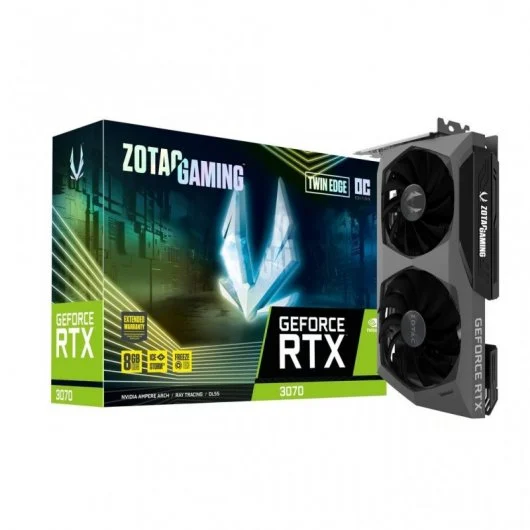

100 - AMD 6800 XT

98 - Nvida RTX 3080

93 - AMD 6750 XT

85 - AMD 6700 XT
71 - Nvidia RTX 3070

65 - Nvidia RTX 3060 Ti
Las gráficas valoradas en esta página están calificadas de 1-100 siendo 100 el rendimiento bruto máximo de la mejor tarjeta gráfica en esta gama y 1 siendo una tarjeta gráfica que bajo las mismas circunstancias nos ofreciese 99% fps menos. La puntuación está obtenida sin tener en cuenta el "Ray tracing" o tecnologías como DLSS o FSR. Tambien se puede apreciar que estan en tarjetas de diferentes colores según el fabricante. Al estar hablando de gama media entendemos gráficas con precios entre 450-900€.